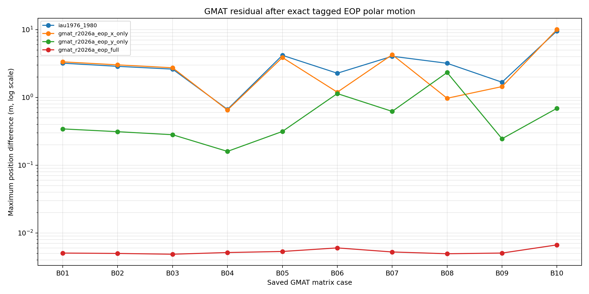
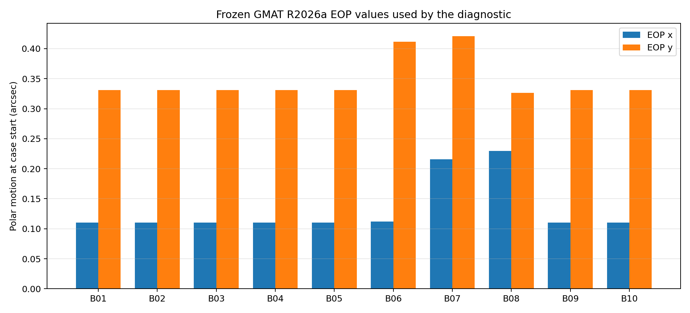

Experiment: EXP-GMAT-EOP-1C1-001
Status: diagnostic completed with warnings
Decision: candidate_identified_requires_independent_validation
Recommended candidate: gmat_r2026a_eop_full
| Model | Median position m | Worst position m | Median velocity mm/s | Worst velocity mm/s | Median position ratio | Rule passed |
|---|---|---|---|---|---|---|
| iau1976_1980 | 3.03197126 | 9.57699793 | 3.32738413 | 10.8254444 | 1.000000 | no |
| gmat_r2026a_eop_x_only | 2.88053724 | 10.0369666 | 2.95622241 | 11.3521402 | 0.950054 | no |
| gmat_r2026a_eop_y_only | 0.328878334 | 2.33127306 | 0.369628642 | 2.63621747 | 0.108470 | no |
| gmat_r2026a_eop_full | 0.0051026125 | 0.00667339822 | 0.0057822286 | 0.00755087646 | 0.001683 | yes |
Source rows: 23633; MJD 37665 to
61297; SHA-256 52c95d6871066e892463328424ca34f5e9cedde92c747465a40f7cd0ecd86ed3.
| Case | Start x arcsec | Start y arcsec | Start coverage | End coverage |
|---|---|---|---|---|
| B01_CONTROL_400KM_I51P6_JAN_24H | 0.110512 | 0.331193 | exact_source_row | exact_source_row |
| B02_ALTITUDE_700KM_I51P6_JAN_24H | 0.110512 | 0.331193 | exact_source_row | exact_source_row |
| B03_ALTITUDE_1000KM_I51P6_JAN_24H | 0.110512 | 0.331193 | exact_source_row | exact_source_row |
| B04_INCLINATION_5DEG_400KM_JAN_24H | 0.110512 | 0.331193 | exact_source_row | exact_source_row |
| B05_INCLINATION_98DEG_400KM_JAN_24H | 0.110512 | 0.331193 | exact_source_row | exact_source_row |
| B06_EPOCH_APR_400KM_I51P6_24H | 0.112243 | 0.411322 | exact_source_row | exact_source_row |
| B07_EPOCH_JUL_400KM_I51P6_24H | 0.215921 | 0.421097 | exact_source_row | exact_source_row |
| B08_EPOCH_OCT_400KM_I51P6_24H | 0.229781 | 0.326522 | clamped_after_source_range | clamped_after_source_range |
| B09_DURATION_6H_400KM_I51P6_JAN | 0.110512 | 0.331193 | exact_source_row | interpolated_between_source_rows |
| B10_DURATION_72H_400KM_I51P6_JAN | 0.110512 | 0.331193 | exact_source_row | exact_source_row |
The full x/y EOP polar-motion realization is compared with the closed 1B baseline and x-only/y-only ablations. The exact file and boundary behavior are frozen to reproduce GMAT R2026a. The October case is beyond the tagged file and therefore uses GMAT's documented endpoint-clamping behavior.
A candidate passing this diagnostic still requires a new independent GMAT matrix before it can replace the closed 1B baseline. This is software-model agreement, not measured-orbit truth or flight qualification.

